Tanques del Reino Unido
El Reino Unido inventó el carro de combate en 1916 y, tras años de dividir sus diseños entre carros de crucero y de infantería, creó con el Centurion uno de los grandes carros de la posguerra.
Primera Guerra Mundial
1916–1918 · 5 fichas-
 Reino Unido · 1916
Reino Unido · 1916Mark I
Carro pesado
-
 Reino Unido · 1917
Reino Unido · 1917Mark IV
Carro pesado
-
 Reino Unido · 1918
Reino Unido · 1918Mark IX
Transporte blindado de tropas
-
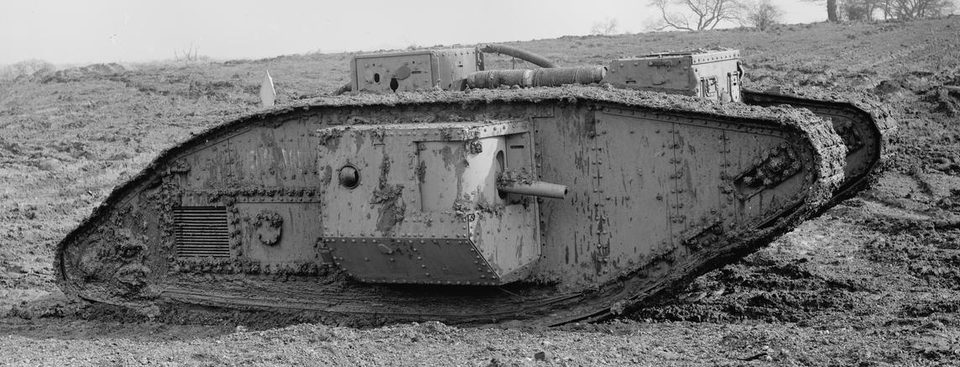
Reino Unido · 1918Mark V
Carro pesado
-
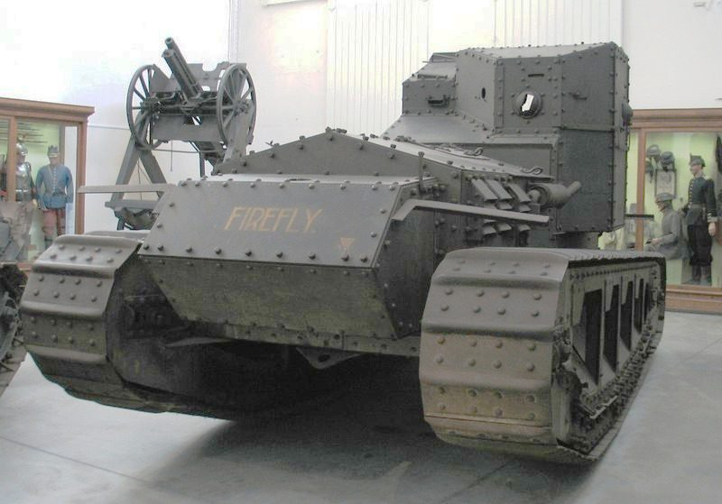
Reino Unido · 1918Medium Mark A Whippet
Carro medio
Entreguerras
1919–1939 · 8 fichas-
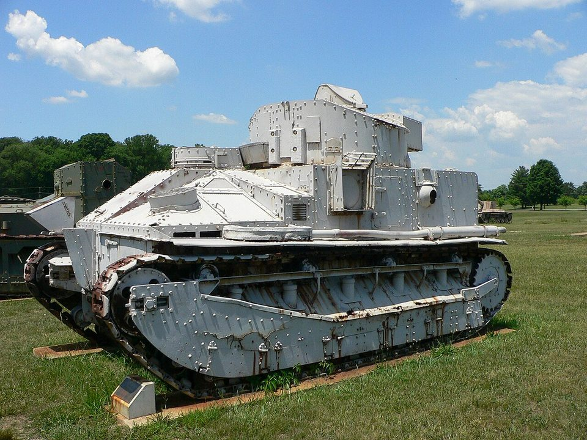
Reino Unido · 1925Vickers Medium Mark II
Carro medio
-
 Reino Unido · 1926
Reino Unido · 1926Vickers A1E1 Independent
Prototipo de carro pesado
-
 Reino Unido · 1927
Reino Unido · 1927Carden-Loyd Mk VI
Tanqueta
-
 Reino Unido · 1929
Reino Unido · 1929Vickers de 6 toneladas
Carro ligero
-
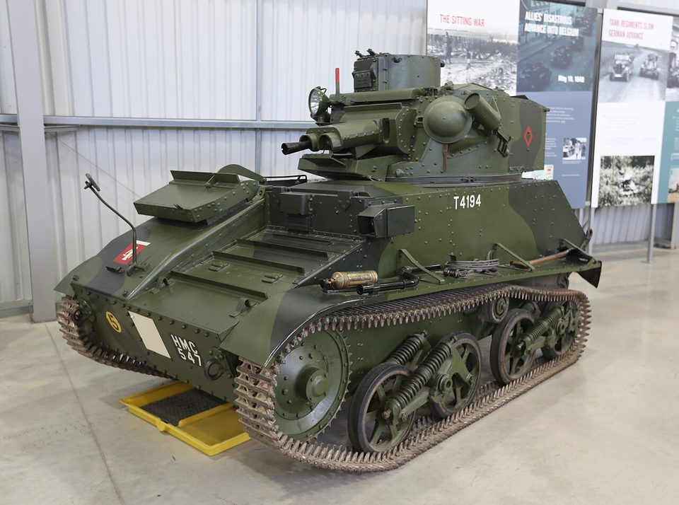
Reino Unido · 1936Light Tank Mk VI
Carro ligero
-
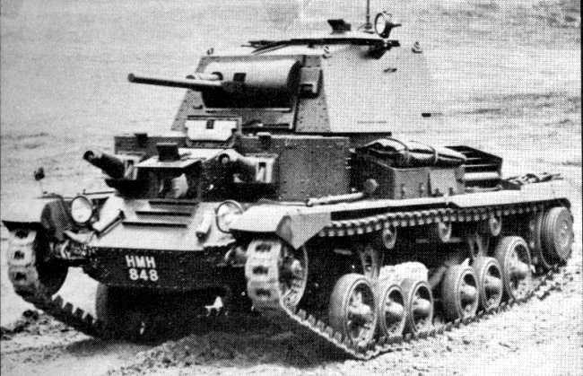
Reino Unido · 1938Cruiser Mk I (A9)
Carro de crucero
-
 Reino Unido · 1938
Reino Unido · 1938Cruiser Mk II (A10)
Carro de crucero pesado
-
 Reino Unido · 1938
Reino Unido · 1938Matilda I
Carro de infantería
Segunda Guerra Mundial
1939–1945 · 11 fichas-
 Reino Unido · 1939
Reino Unido · 1939Matilda II
Carro de infantería
-
 Reino Unido · 1940
Reino Unido · 1940Covenanter
Carro de crucero
-
 Reino Unido · 1940
Reino Unido · 1940Tetrarch
Carro ligero aerotransportado
-
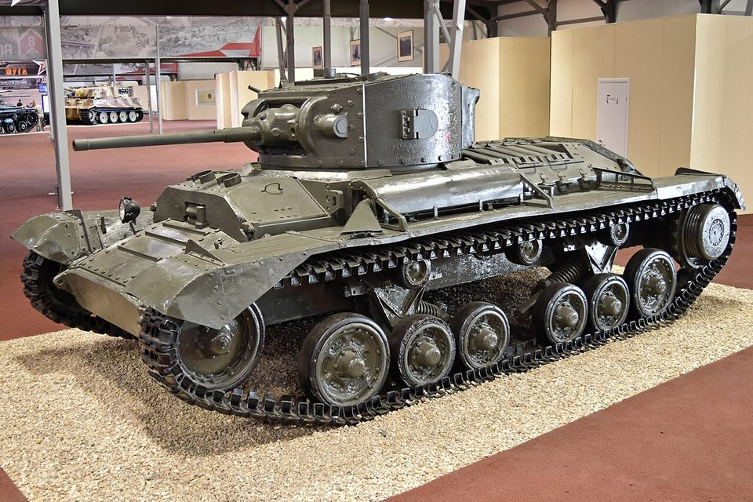
Reino Unido · 1940Valentine
Carro de infantería
-
 Reino Unido · 1941
Reino Unido · 1941Churchill
Carro de infantería
-
 Reino Unido · 1941
Reino Unido · 1941Crusader
Carro de crucero
-
 Reino Unido · 1941
Reino Unido · 1941TOG II
Prototipo de carro pesado
-
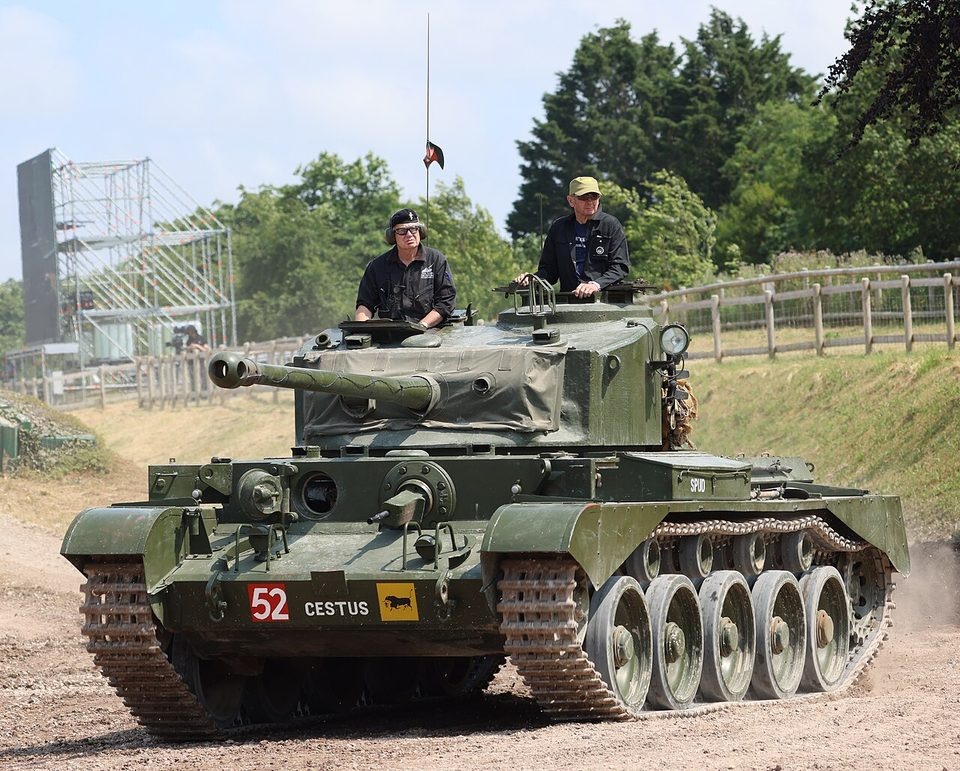
Reino Unido · 1944Comet
Carro de crucero
-
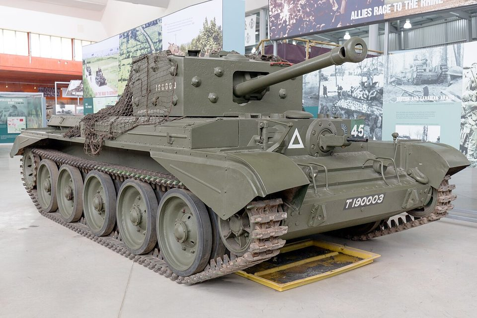
Reino Unido · 1944Cromwell
Carro de crucero
-
 Reino Unido · 1944
Reino Unido · 1944Sherman Firefly
Carro medio
-
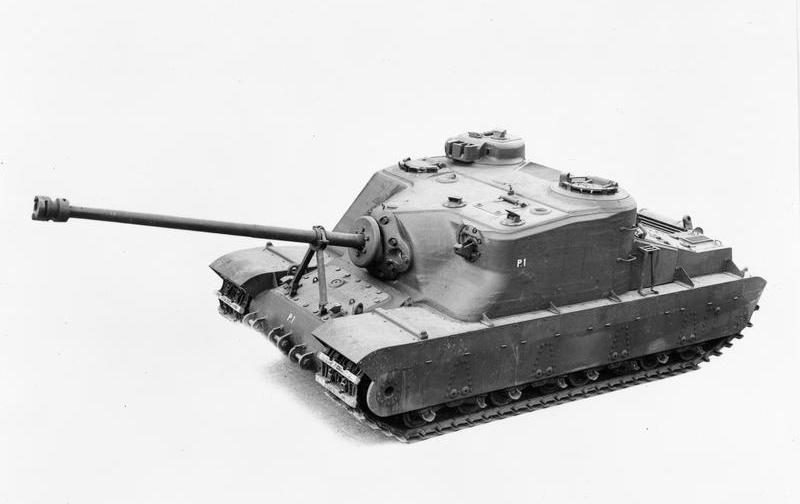
Reino Unido · 1945Tortoise
Prototipo de carro de asalto pesado
Guerra Fría
1946–1991 · 8 fichas-
 Reino Unido · 1945
Reino Unido · 1945Centurion
Carro de combate principal
-
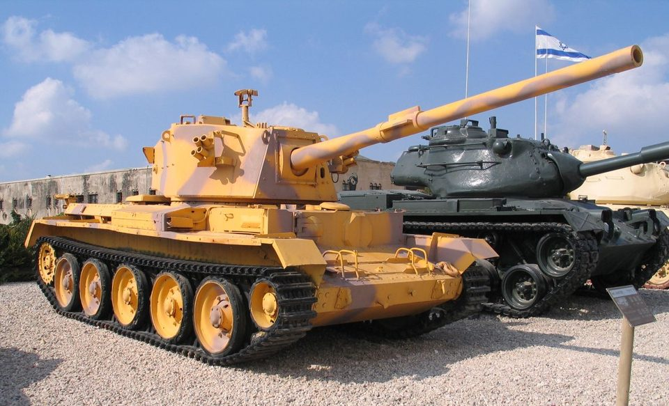
Reino Unido · 1952FV4101 Charioteer
Cazacarros
-
 Reino Unido · 1955
Reino Unido · 1955Conqueror
Carro pesado
-
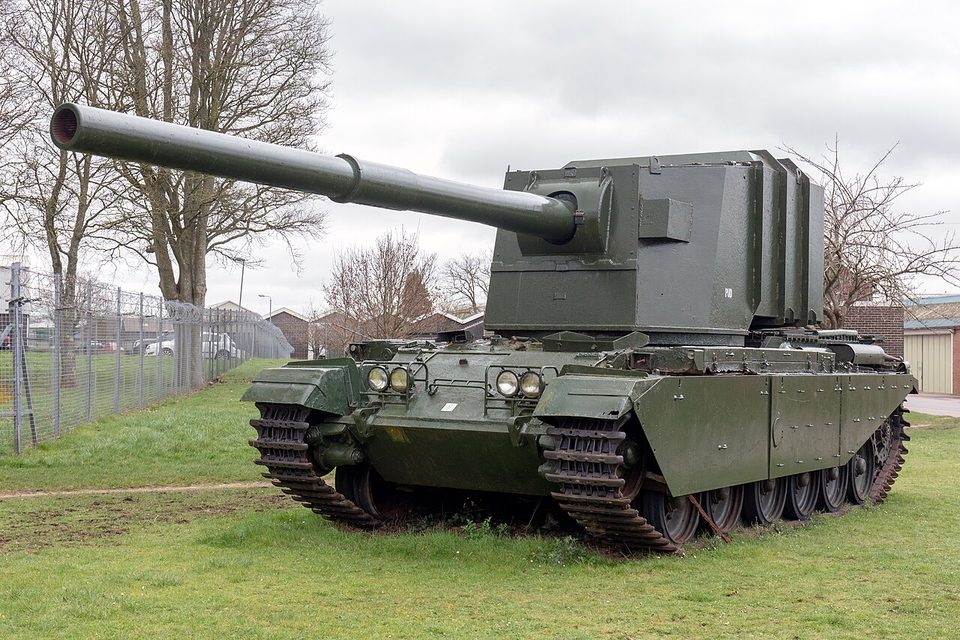
Reino Unido · 1955FV4005
Prototipo de cazacarros pesado
-
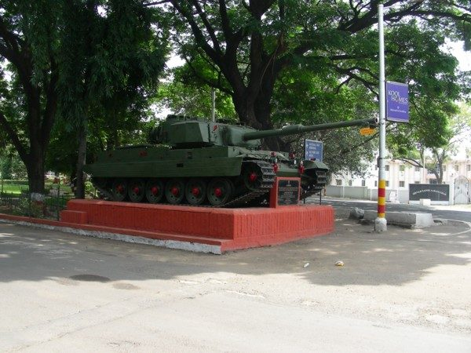
Reino Unido · 1965Vickers MBT
Carro de combate principal
-
 Reino Unido · 1966
Reino Unido · 1966Chieftain
Carro de combate principal
-
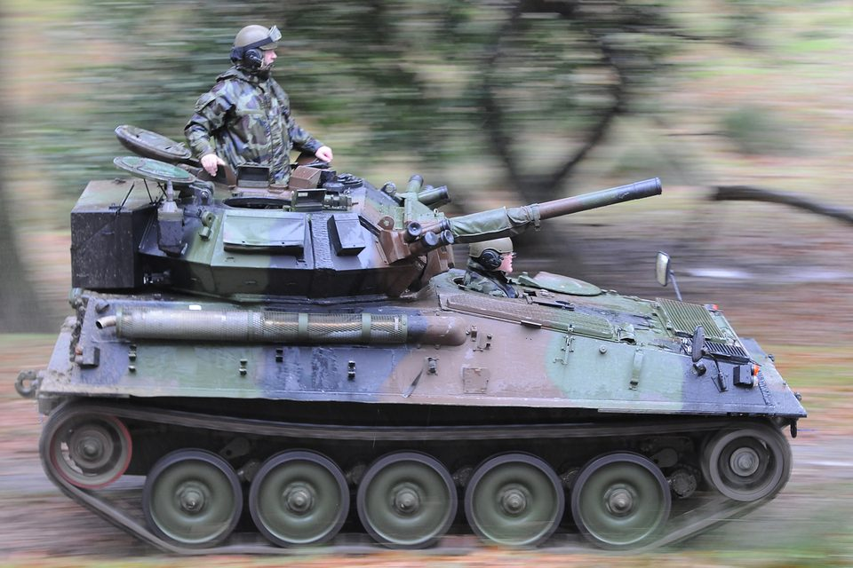
Reino Unido · 1973FV101 Scorpion
Carro ligero de reconocimiento
-
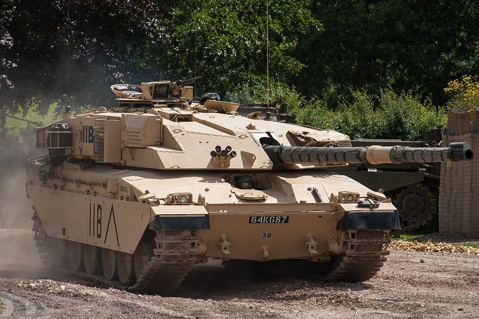
Reino Unido · 1983Challenger 1
Carro de combate principal